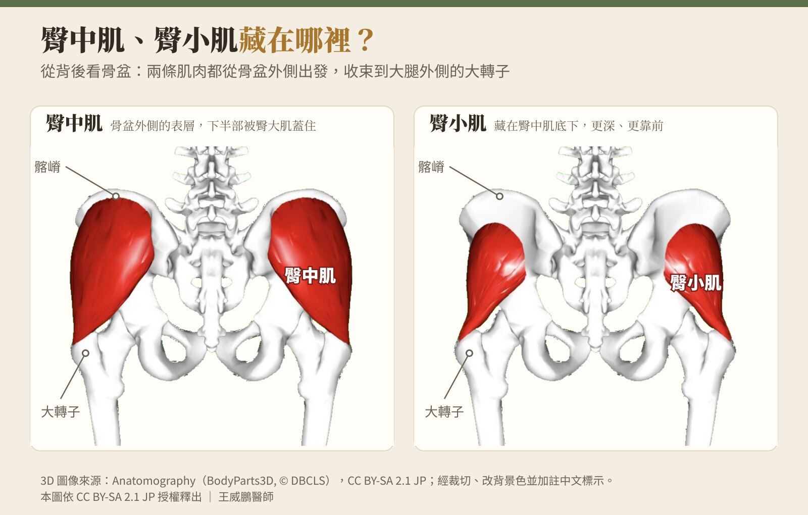
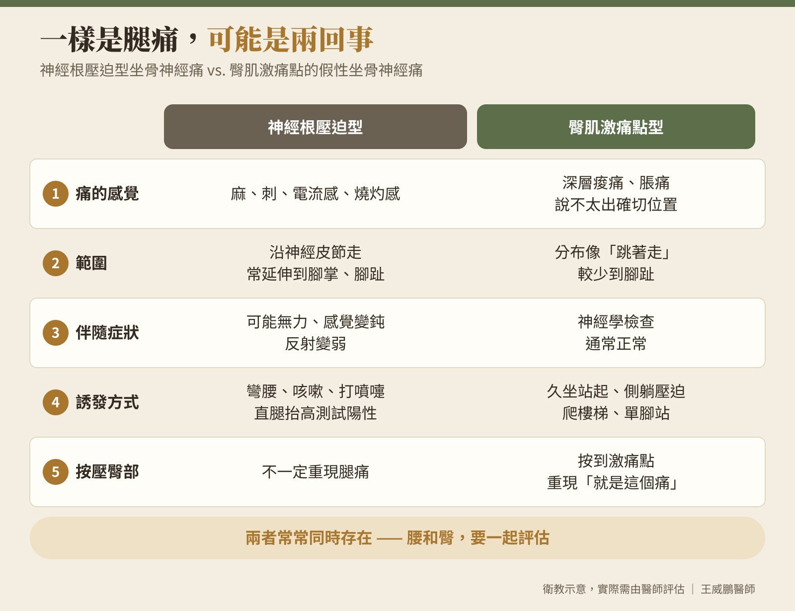

屁股痛到小腿，卻不是坐骨神經痛？臀中肌、臀小肌的「假性坐骨神經痛」
痛從屁股一路跑到大腿外側、膝蓋外側，甚至小腿外側；久坐站起來時特別明顯，前幾步路還會一跛一跛。遇到這種痛，第一個念頭往往是「坐骨神經痛」。
於是吃藥、拉腰、認真拉筋，痛卻沒有走；拍了 MRI，報告只寫著「輕微椎間盤膨出，未明顯壓迫神經根」。
這時候，問題可能不在腰椎，而在臀部深處的兩條肌肉——臀中肌與臀小肌。
痛的地方，不一定是問題的地方
坐骨神經被壓到，確實會讓痛從屁股跑到腿；但肌肉裡的「激痛點（Trigger Point）」——也就是肌肉裡緊縮、過度敏感的小結——也會把痛「轉移」到遠處，醫學上稱為轉移痛（Referred Pain）。
這就像樓上漏水，樓下天花板潮濕的位置，常常不在漏水點的正下方。一直粉刷潮濕的天花板，水還是會繼續滲下來。
臀中肌（Gluteus Medius）和臀小肌（Gluteus Minimus），就是最常「假冒」坐骨神經痛的兩條肌肉。臀小肌甚至常被稱為「假性坐骨神經痛（Pseudo-sciatica）」的元凶。世界衛生組織的國際疾病分類第十一版（ICD-11），也已收錄「臀部症候群（Gluteal Syndrome）」這種模仿坐骨神經痛的狀況。
臀中肌、臀小肌在哪裡？
把手叉腰，大拇指往後、其他四指往前，手掌下方骨盆外側那一片，就是它們的位置。

- 臀中肌：從髂骨外側延伸到大腿外側的大轉子，只有一部分被臀大肌蓋住。主要工作是讓你單腳站穩時，骨盆不會往對側掉下去。
- 臀小肌：藏在臀中肌更深層，緊貼著髂骨，負責把股骨頭穩穩地「壓」在髖臼裡。因為它很深，一般按摩很難碰到。
這兩條肌肉是走路、爬樓梯、單腳站時的「骨盆穩定器」。長時間久站、翹腳、三七步站、長期側躺壓同一邊，或是腰部本來就有狀況、臀肌長期超時加班，都容易讓它們累積出激痛點。
痛會怎麼跑？
臀中肌、臀小肌激痛點的轉移痛分布圖，請參考 triggerpoints.net 的 臀中肌 與 臀小肌 頁面。
- 臀中肌：痛多在骨盆後上緣（髂嵴）、薦骨旁、臀部上方與外側，偶爾延伸到大腿上段。很多人會說是「腰痛」。
- 臀小肌後側纖維：痛從臀部往下，沿著大腿後側、小腿後側跑，和坐骨神經的走向非常像。
- 臀小肌前側纖維：痛從臀部外側一路沿著大腿外側、膝蓋外側，延伸到小腿外側，甚至到腳踝。
有趣的是，臀小肌前側纖維的痛，幾乎就是足少陽膽經在下肢的路線——環跳、風市一線。古人治療腿外側疼痛常取環跳穴，從現代解剖來看，和臀部深層肌肉的處理有不少可以對照的地方。
曾有研究用紅外線熱像觀察發現，刺激臀小肌激痛點時，轉移痛的區域會出現異常的血管擴張反應——也就是說，這種「跑到小腿的痛」不是想像出來的，而是神經系統真的有在「轉接」。
真的坐骨神經痛，還是臀肌在假冒？

| 對照項目 | 神經根壓迫型坐骨神經痛 | 臀肌激痛點的假性坐骨神經痛 |
|---|---|---|
| 痛的感覺 | 麻、刺、電流感、燒灼感 | 深層痠痛、脹痛，講不太出確切位置 |
| 範圍 | 沿著特定神經的皮節，常延伸到腳掌、腳趾 | 常「跳著」分布，較少到腳趾 |
| 伴隨症狀 | 可能有肌力下降、感覺變鈍、反射變弱 | 神經學檢查通常正常 |
| 誘發方式 | 彎腰、咳嗽、打噴嚏時加劇；直腿抬高測試陽性 | 久坐站起、側躺壓迫、爬樓梯、單腳站時加劇 |
| 按壓臀部 | 不一定會重現腿痛 | 按壓激痛點，常能重現「就是這個痛」 |
這張表只是幫助你了解兩者的差異，實際上需要醫師做完整的神經學與理學檢查來判斷。
兩者常常是「一起來的」
臨床上最容易卡住的，其實不是「二選一」，而是「兩個都有」。
曾有一項研究檢查了 271 位經臨床、肌電圖與 MRI 確診的腰薦神經根病變患者，發現有 76.4% 在臀部可以找到激痛點；相比之下，健康受試者只有 1.9%。單側腿痛的患者中，約四分之三的臀部激痛點就在痛的那一側。
另一項研究納入了 325 位腰痛患者，發現臀部外上方出現激痛點，對於判斷「有沒有神經根受影響」的特異度達 91.4%。
這代表兩件事，也成了我在臨床上的判斷原則：
- 臀部有激痛點，不代表腰就沒事。神經根受壓時，它支配的臀肌常常跟著「陪葬」，長出繼發的激痛點。臀部處理完卻只好了一半，就要回頭看看腰。
- 腰椎問題處理完，腿還在痛，別忘了看臀部。神經根的壓迫緩解了，但臀肌裡的激痛點不會自己消失，常常是「殘留痛」的來源。
腰和臀，本來就該一起看。
自我對照：你的腿痛可能跟臀肌有關？
- 痛從屁股外側或偏上方開始，往大腿外側、後側延伸
- 痛偏「痠、脹、深」，較少有麻或電流感
- 久坐站起來、剛開始走路時特別痛，走一陣子反而好一點
- 側躺壓到痛的那一側會不舒服，甚至痛醒
- 翹腳、三七步站、爬樓梯、單腳站穿褲子時會誘發
- 用手或球按壓臀部外側的某個點，會引出「就是這個痛」
- 之前以坐骨神經痛治療，效果不如預期
符合的項目越多，臀肌參與的可能性越高，但這不能取代醫師的評估。
這些狀況，請先就醫
以下情況不建議自己處理，請盡快就醫：
- 腿無力持續惡化，例如腳板抬不起來、走路拖腳
- 大小便控制異常，或會陰、大腿內側麻木
- 合併發燒、體重無故減輕、有癌症病史
- 跌倒後無法承重，或鼠蹊部劇痛
- 休息、換姿勢都不會緩解的夜間疼痛
我們怎麼評估與處理
先把「是誰在痛」找出來
門診會先做神經學檢查（肌力、反射、感覺、直腿抬高測試），排除或確認神經根的問題；再檢查髖關節、薦髂關節與臀肌。超音波可以幫忙看到臀中肌、臀小肌的層次與肌腱狀態，也能確認痛點是不是真的在肌肉裡。
乾針、針刀與浮針
臀小肌位置很深，按摩與泡棉滾筒往往「力有未逮」。乾針（Dry Needling）可以直接到達激痛點，引出局部抽動反應（Local Twitch Response），讓緊縮的肌肉放鬆。曾有一項隨機對照試驗發現，對於大轉子疼痛症候群的患者，乾針在六週時的止痛與功能改善，不劣於類固醇注射；也有小型研究發現，在運動治療之外加上臀中肌乾針，慢性腰痛患者的疼痛與功能改善較多。不過這些研究規模都還不大，仍需要更多證據。
臀部深層有上臀神經與血管通過，在超音波導引下施針，可以即時看到針尖位置與周圍結構，幫助避開重要的神經血管。若肌肉長期纖維化、筋膜沾黏明顯，會視情況搭配針刀（Acupotomy）或浮針。
運動處方：讓臀肌重新上工
激痛點鬆了，不代表肌肉就「會用」了。臀肌長期緊縮、疏於使用，力量與控制都會下降，只放鬆不訓練，很容易再次累積出新的激痛點。我們會從簡單的臀部外展等長收縮開始，再逐步進入橋式、側向跨步、單腳站穩定訓練，依每個人的狀況調整。
居家可以做的事
- 不翹腳、不三七步站：這兩個姿勢會讓臀中肌、臀小肌長時間被拉長加壓。
- 側躺時兩膝間夾個枕頭：避免上面那隻腳往下掉，也盡量不要壓在痛的那一側。
- 久坐每 30–40 分鐘起來走動：站起來時可用手輔助，減少臀肌突然用力。
- 簡單的臀部外展等長收縮：仰躺、膝蓋彎曲，大腿外側套彈力帶，兩膝往外推彈力帶並停住 10–30 秒，以不引起疼痛為原則。
- 球放鬆要溫和：可以用球輕壓臀部外側的痠痛點，但不要用力硬壓到疼痛加劇。
若居家調整兩三週仍沒有改善，或痛持續影響睡眠與生活，建議尋求專業醫師做超音波與理學評估。
結語
坐骨神經痛是一個「症狀的描述」，不是一個「原因的答案」。痛從屁股跑到腿，可能是神經根被壓，可能是臀肌在「轉接」，也可能兩者都有。
腿痛找腰，也別忘了看看臀。
本文僅供醫療衛生教育參考，不能取代醫師的診斷與治療。每個人的病情、體質與治療反應不同，文中提及的治療方式並非適用於所有人，亦不保證療效；侵入性治療可能伴隨副作用與風險。如有身體不適，請尋求合格醫療專業人員當面評估。
參考資料
- Adelmanesh F, Jalali A, Jazayeri Shooshtari SM, et al. Is There an Association Between Lumbosacral Radiculopathy and Painful Gluteal Trigger Points?: A Cross-sectional Study. Am J Phys Med Rehabil. 2015;94(10):784-791. DOI
- Adelmanesh F, Jalali A, Shirvani A, et al. The Diagnostic Accuracy of Gluteal Trigger Points to Differentiate Radicular From Nonradicular Low Back Pain. Clin J Pain. 2016;32(8):666-672. DOI
- Skorupska E, Dybek T, Rychlik M, et al. Amplified Vasodilatation within the Referred Pain Zone of Trigger Points Is Characteristic of Gluteal Syndrome—A Type of Nociplastic Pain Mimicking Sciatica. J Clin Med. 2021;10(21):5146. DOI
- Skorupska E, Dybek T, Rychlik M, et al. A Potential Objective Sign of Central Sensitization: Referred Pain Elicited by Manual Gluteus Minimus Muscle Exploration. Pain Res Manag. 2023;2023:4030622. DOI
- Brennan KL, Allen BC, Maldonado YM. Dry Needling Versus Cortisone Injection in the Treatment of Greater Trochanteric Pain Syndrome: A Noninferiority Randomized Clinical Trial. J Orthop Sports Phys Ther. 2017;47(4):232-239. DOI
- Dar G, Goldberg A. Dry needling of the gluteus-medius muscle, combined with standard care, for chronic low back pain—a pilot randomized sham-controlled trial. J Man Manip Ther. 2025;33(5):392-400. DOI
- Bateman EA, Fortin CD, Guo M. Musculoskeletal mimics of lumbosacral radiculopathy. Muscle Nerve. 2025;71(5):816-832. DOI
- Simons DG, Travell JG, Simons LS. Travell & Simons' Myofascial Pain and Dysfunction: The Trigger Point Manual. Vol. 2, Lower Half of Body.